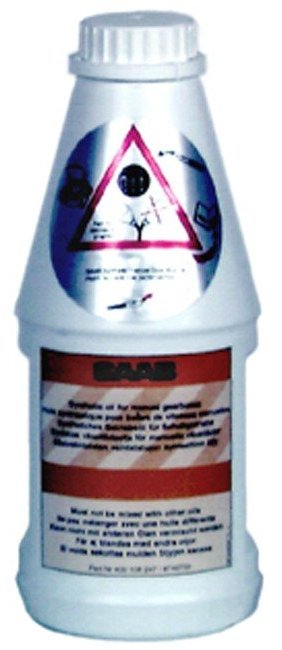

40 - 400 108 247 Gearbox Oil
40 - 400 108 247 Gearbox Oil

Specifications
Fully synthetic. 1 l bottle.
Saab application
For manual gearboxes in:
- Saab 900 3D/5D M94-, VIN V2033279-
- Saab 900 Convertible M97- normally aspirated, VIN V7008692-
- Saab 900 Convertible M97- with turbo, VIN V7008812-
- Saab 9000 M97-, VIN V1021673-
- Saab 9-5 -M02, with diesel engine, VIN -23027688
- Saab 9-5 -M02, with petrol engine, VIN -23027674
- Saab 9-3 -M02, with diesel engine, VIN -22023855
- Saab 9-3 -M02, with petrol engine B205R/B205L, VIN -22023981 (3D/5D) or - 27007451 (CV)
- Saab 9-3 -M02, with petrol engine B205E, VIN -22023961 (3D/5D) or -27007673 (CV)
- Saab 9-3 -M02, with petrol engine B205R, VIN -27008928.
The following is used for Saab -M97: Engine oil (mineral oil) 10W/30 or 10W40 as per API service SG, SF/CC, SF/CD. Synthetic engine oil may not be used.
Packaging
Qty. 12
Transport
No restrictions apply when transporting this product.
Directives
Avoid skin and eye contact.